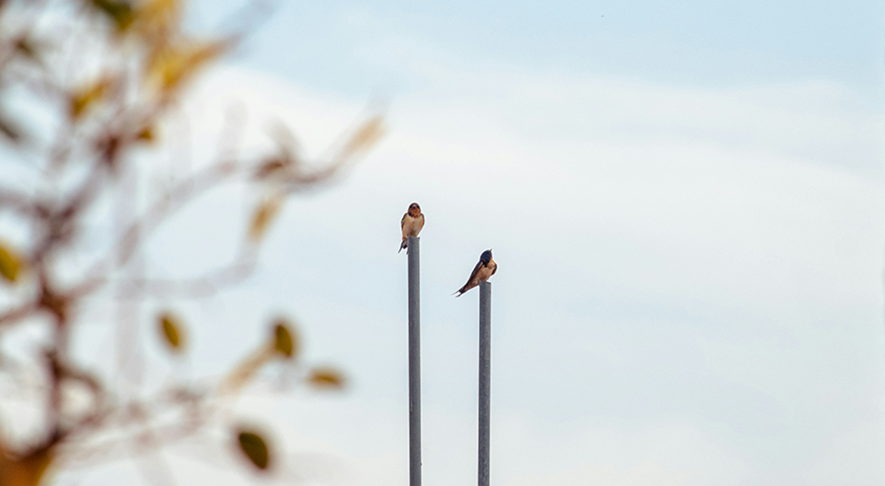
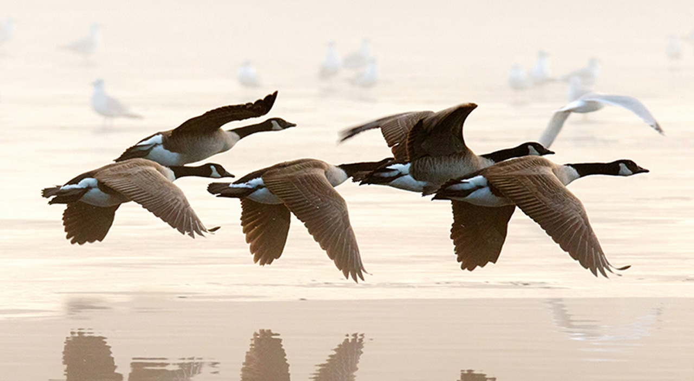
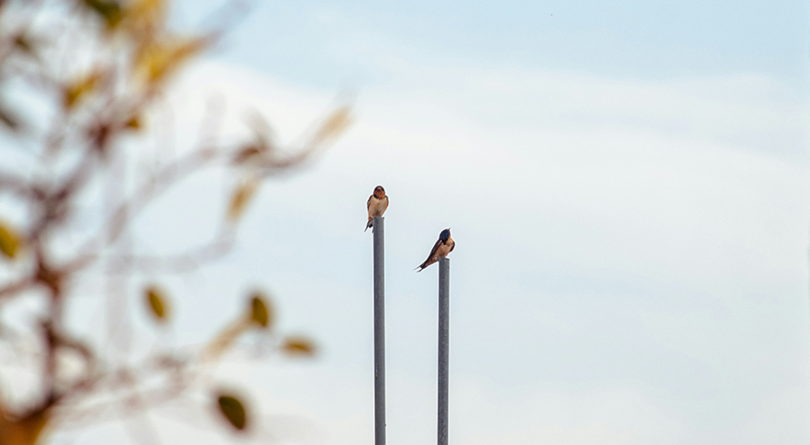
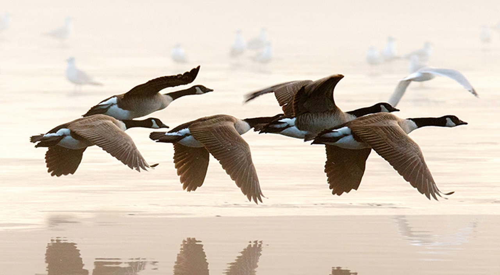
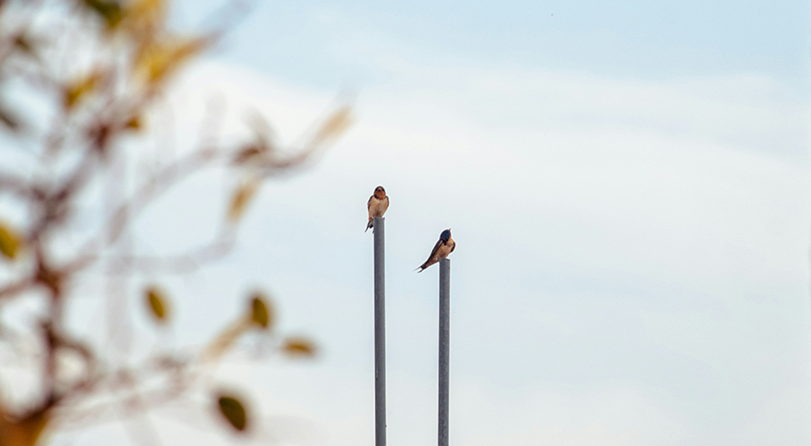
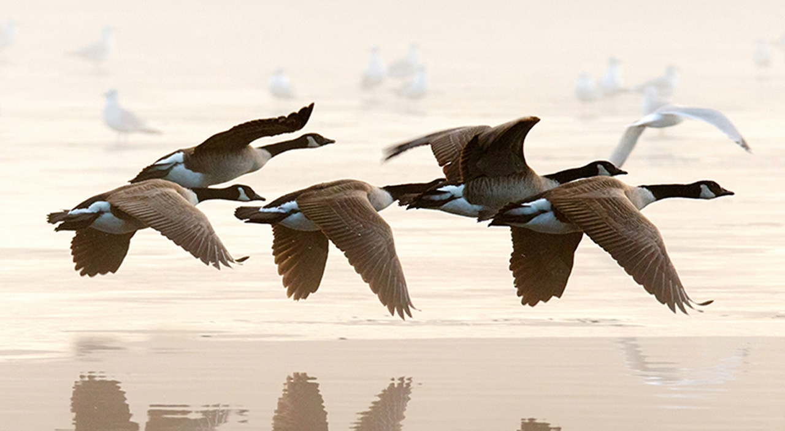

Dive into a world of birds, where every chirp and flight tells a unique story. Join our forum, a place where enthusiasts can share experiences and enjoy the splendor of avian wonders together.


A good bird book or field guide for learning bird identification andclosely a reliable pair of binoculars is the perfect combo for birdwatchers. If budget is a concern, start with a free download of the PDF version of the guide. Another good investment for bird watchers is a good camera to capture the fleeting moments and unique behaviors of birds in their natural habitat, ensuring memorable and high-quality photographs of these fascinating creatures. Watching birds with the naked eye can be limiting, but you can enjoy birdwatching by visiting local parks or nature reserves where birds are likely to be closer.